← 返回阅读库 · 原论文目录
论文讲解阅读文档 · 表征学习 · v198
Masked Feature Prediction .Self-Supervised Visual Pre-Training[2112.09133]
视频时长 00:05:15；讲解文字 2,421 字符；提取讲解画面 14 张。按视频原顺序阅读，每段文字保留时间戳。
文字来自整段视频的自动语音转写，按自然停顿分段，并与 PPT / 论文页面 / 演示画面对齐。未将讲解压缩为摘要；术语、数字和口述公式请结合画面及原论文核对。 阅读稿已校正规范部分明确术语误识别；原始逐字稿和每处修改记录另行保留。
讲解画面为源视频截图（640×360），不是可编辑 PPT 文件。全片按每秒 2 帧扫描内容变化，逐步展开页保留；连续动画保留代表画面。清晰度受源视频限制。
下载完整资料包 · 含离线 HTML、PDF、Word、全部 PPT 画面和字幕。
原论文与材料
Masked Feature Prediction for Self-Supervised Visual Pre-Training · 下载完整 PDF（17 页）
按时间阅读
00:00:00–00:00:28 · 画面 001
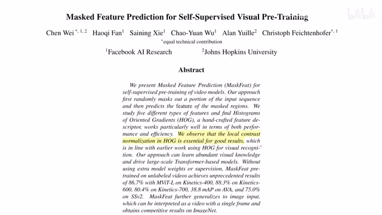
00:00:00–00:00:28 · 画面 001大家好啊，今天我们来快速介绍一篇论文，Masked Feature Prediction for Self-Supervised Visual Pre-Training。那首先我们看这个 Masked Prediction，那就是 BEiT, BERT, MAE 那些东西，但是呢它是这个 Feature Prediction，这就意味着呢我们做的 Prediction 的这个 Supervision 来自的呢并不是说原始的像素，而是我们提的一个 Feature。那更具体来说呢就是这个 Hog 这个梯度直方图，那么下面呢我们就来看作者具体的实现。
00:00:28–00:01:11 · 画面 002
00:00:28–00:01:11 · 画面 002首先呢这是这个 mask feature 啊，对吧？intuition 非常简单，视频进来切成了这个 space time cubes，也就是你想象这个视频它是一个大的 tensor 对吧，你在这个空间尺度上切节道，时间尺度上切节道，就像切这个面包块一样啊，就把它切成一个个小的 cube，然后呢做这个 tokenizationmask 的一部分的这个 token 换成这个 mask token，这么一个专门的一个 learnable 的这么一个 token，然后再加 positional embedding。
然后呢扔到 transformer 里面做变换就行了。那么正如我们之前所说的，本轮预测的呢并不是原始的像素，而是说这个 target feature，就像这样啊，我们的这个比如说这里最好用的其实是 HOG feature 梯度直方图。那么经过这样一通预测这个 pretraining 之后呢，我们就可以把这个 encoder 拿下来做后面的任务，那么下面呢我们就来看作者具体用了哪些这个 target feature。
00:01:11–00:01:12 · 画面 003
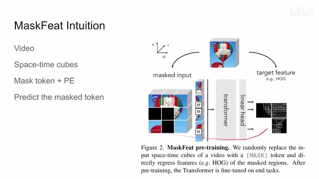
00:01:11–00:01:12 · 画面 00300:01:12–00:01:21 · 画面 004
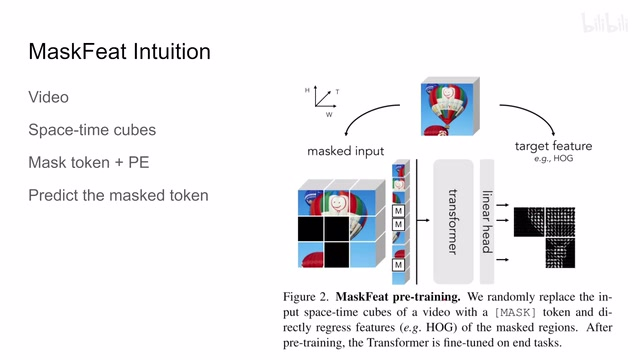
00:01:12–00:01:21 · 画面 00400:01:21–00:02:17 · 画面 005
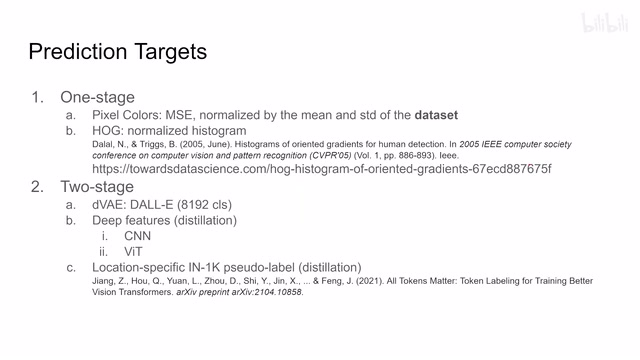
00:01:21–00:02:17 · 画面 005那作者呢试了两大类，的一种呢就是 one stage，就是我们通过简单的计算就可以得到的，另一种呢是 two stage，它呢就比较像知识蒸馏，让我们这个已经训练好的这个网络呢去解一些 feature 出来，然后呢让我们的现在的这个学习的这个网络呢去 match 这个解出来的已经好的这个 feature。那么在这个 one stage 里面呢，我们包括这个原始的这个像素，它呢你用 MSE 就可以做这个误差了。
它的实现是通过整个数据集的均值和标准差来做 Normalization，它是区别于 MAE，它是相对于每一个 Patch 来做 Normalization 这样一个实现。那么再就是 HogHistogram 对吧，这个是非常经典的，但凡是一个正经的 Computer Vision 的课它都会讲，最早是这篇 Hog 加 SVM 去检测人的对吧，这里有一个不错的手把手的解释。
这里呢做一个简单的介绍吧，这里拿到一个图像之后呢，首先我们会根据这个它这个每一个像素周边的这个区域计算这个像素位置它的这个梯度它的大小啊，它的这个方向。这里呢这里呢看我们有两张表，一个是梯度的方向，一个是梯度的大小。然后呢我们把这个图像画成一个小格子嘛，那么每一个格子这个区域里呢，我们就得到像这样一个。
00:02:17–00:03:23 · 画面 006
00:02:17–00:03:23 · 画面 006统计的这个表。然后呢在这个小区域当中呢，我们呢开始统计这个直方图，你可以看到它的直方图的 b 呢是根据我们这个梯度它的方向来划分的，那么它里面填的数值呢是我们实际的这个 magnitude。那比如说这个正好落在 80 度的角上，这两个 magnitude 呢就给到这个 80。那比如说这个它落在 0 和 20 之间，因为它是 10 嘛对吧，所以这个 4 拆成两半，一个 2 一个 2 就到这这两边来。
那同理呢一样的，那么统计完这个区域的这个直方图之后呢，它本身呢就是一个 vector 对吧，你把它 normalize 把它变成一个这个单位向量，它呢就可以作为我们这个预测的这个目标了。那么再回到作者尝试的这些方法当中，作者还试了这个离散的这个 VAE，这个 VAE 本质上呢就是它是讯好了一个这个 8192 的这么一个字典，然后呢你去查每一个 patch 它是属于哪一个字典。
00:03:23–00:04:20 · 画面 007
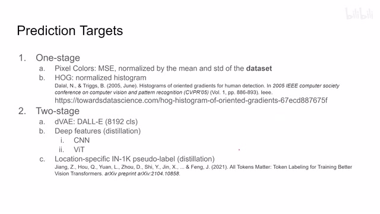
00:03:23–00:04:20 · 画面 007对吧？还有更多的 deep features，就是 distillation，我们用一些训练好的网络去标记每一个 patch，它到底是什么样的一个 feature，把我们的每一个 patch 送到这样的网络里面，比如说 vit ，更直接了，你直接就 token 直接进 token 里面来，对吧？然后得到 token 或者 patch 它对应了 feature，然后用它来作为 supervision 的来源，那么最后作者还设 pseudo-label，本质上是这里它的这个核心的意思呢，就是说啊，我给这个每一个 patch 都分了一个这个 classification，那么一个 pseudo-label，然后呢，你就用这个 cross entropy 去预测这个 label 就好了，那么经过这么一轮这个五种不同的这个 target 做着试下来呢，发现哎，这个 hog 这个东西啊，他这个出奇的好啊，比如说这里呢，在这个 video 上评价方法呢，也是这个 fine-tuning，你可以看到呢，效果出奇的好
00:04:20–00:04:22 · 画面 008
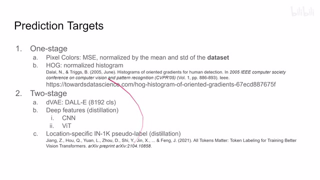
00:04:20–00:04:22 · 画面 00800:04:22–00:04:25 · 画面 009
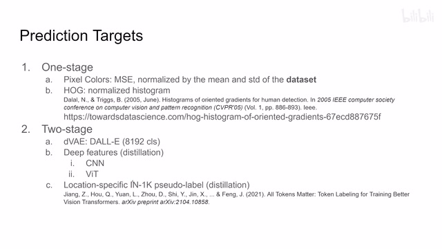
00:04:22–00:04:25 · 画面 00900:04:25–00:04:26 · 画面 010
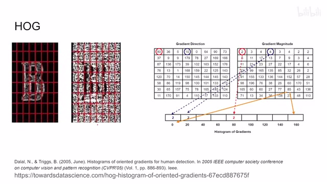
00:04:25–00:04:26 · 画面 01000:04:26–00:04:38 · 画面 011
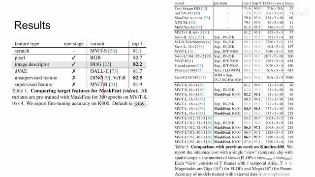
00:04:26–00:04:38 · 画面 011那么这边呢，有更详细的评测的结果，那么同样呢，不止限于 video，你这个东西呢，本来就可以做在这个图片上，对不对？这里呢，作者也汇报了这个 ImageNet 上面的一些结果，感兴趣的朋友呢，可以到原文仔细查看，此外呢，作者还汇报了很多 ablation，比如说我们这个 mask 应该怎么弄，我们这个 token 应该怎么画，是画成 tube 还是画成 frame 还是画成这个现在这样的 cube，为什么画成这样的 cube 等等，这些东西呢，非常推荐你去原文中查看
00:04:38–00:04:44 · 画面 012
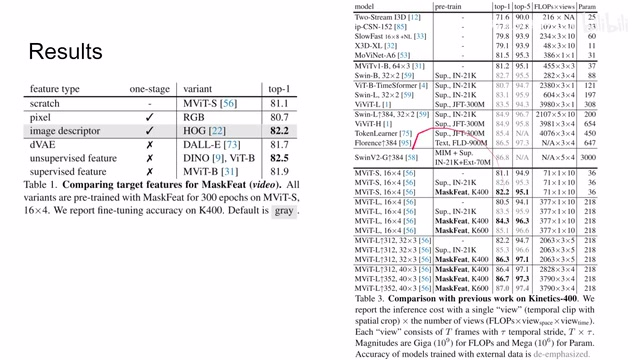
00:04:38–00:04:44 · 画面 01200:04:44–00:05:15 · 画面 013
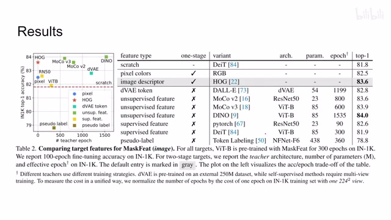
00:04:44–00:05:15 · 画面 013那么以上呢，就是本文这个核心的这个方法，好的，那么以上就是我对这个论文的一个快速的介绍，那么感谢您的收看，再见
00:05:15–00:05:15 · 画面 014
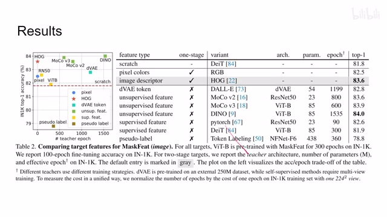
00:05:15–00:05:15 · 画面 014转写与来源说明 · 0 个自动复核提示
保留 12 个原始语音片段，0 个片段触发自动复核提示。提示仅用于定位可能的术语、重复或识别问题，不等于已确认错误。
讲解画面为源视频截图（640×360），不是可编辑 PPT 文件。全片按每秒 2 帧扫描内容变化，逐步展开页保留；连续动画保留代表画面。清晰度受源视频限制。
原视频：paper/合集_2026-10-16_表征学习/[论文速览]Masked Feature Prediction .Self-Supervised Visual Pre-Training[2112.09133].mp4
SHA-256：629c654a445b662a5f915ae498644d476f55d9ec19d5f021c8583e6eca15ac6f
全文按视频语音与画面制作。原论文可从上方链接下载；完整资料包保留全文、原始逐字稿、字幕和校对记录。